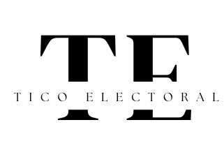

Tico Electoral

Tico Electoral es un sitio web creado para fines educativos donde puede encontrar información de los candidatos a la presidencia del 2022. También información y estadísticas de las encuestas realizadas a los y las costarricenses, según su conocimiento del plan de los partidos políticos vigentes.